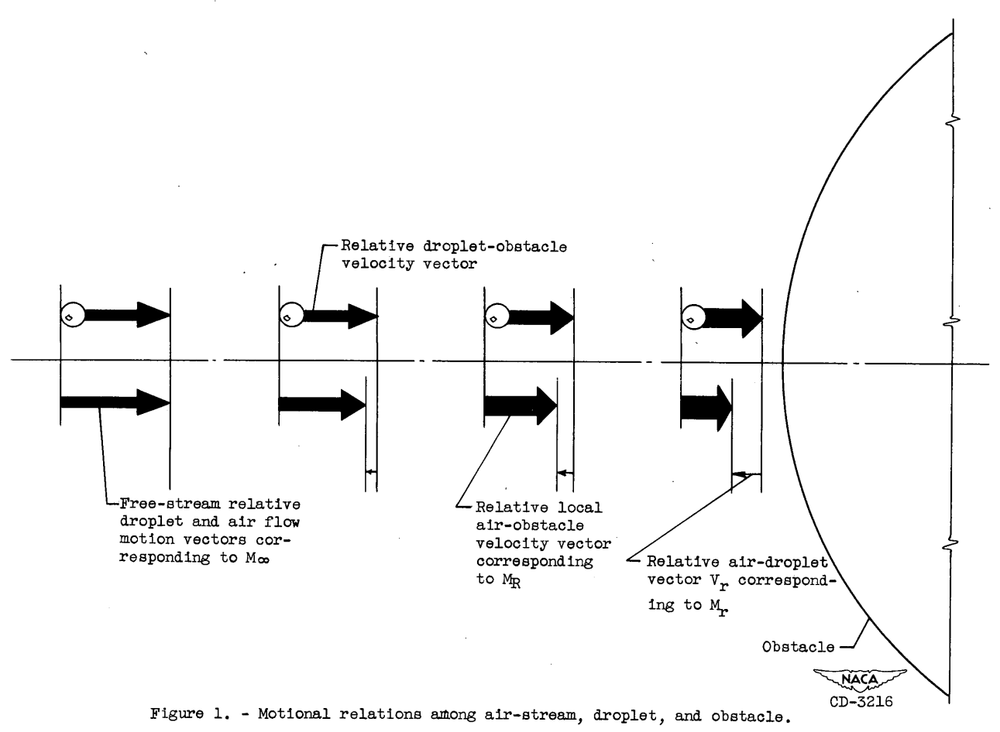

"snow-flakes will form and these will grow by vapor condensation and by evaporation of fog droplets" 1

A "mini-thread" on the evaporation of water drops
Summary
This thread will have a mix of NACA-era and post-NACA era data on water drop evaporation.
Topics:
Irving Langmuir, "Super-Cooled Water Droplets in Rising Currents of Cold Saturated Air"
Evaporation and condensation rates on water drops are calculated.
Let's build a 1D particle motion simulation: Impingement on the stagnation point of a cylinder
A 1D water drop motion simulation is built.
The AEDC 1-Dimensional Multi-Phase code (AEDC1DMP) and the iads1dmp
Water drop evaporation rates in an icing tunnel are calculated.
NACA-TN-3024 revisited
Less that 1% of drops evaporate approaching an obstacle for most cases.
Related
The next thread in the NACA review series is the Icing Wind Tunnel Test Thread.
Notes
-
Langmuir, Irving: Super-Cooled Water Droplets in Rising Currents of Cold Saturated Air, Pt. I. Res. Lab., General Electric Co., Oct. 1943-Aug. 1944. (Army Contract W-33-106-sc-65.) ↩